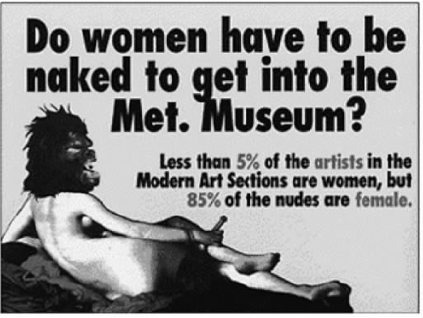
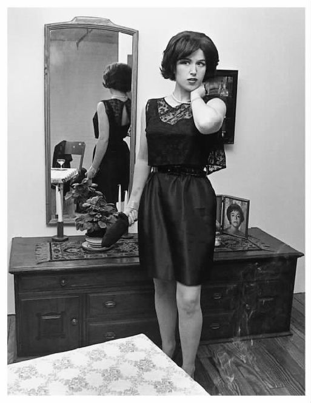

那些少数族裔群体已经开始创建他们自己的艺术学院，女性也在其中——在人数上不占少数，但是在标准的艺术史中她们肯定是少数。女性主义在其他领域有重要影响，因此它在艺术理论中出现也并不令人奇怪。乔治亚·奥基夫是最著名的女画家之一，她一直抵制“女艺术家”这一标签。与此相对照，朱迪·芝加哥1979年的作品《餐宴》则充满张扬的女性意识，这件作品促进了女性主义艺术运动的兴起。芝加哥制作的三角形餐台装置按传统方式布置了刺绣和瓷器画这些传统的“女性的”艺术媒介，餐台上的每个碟子都用形似阴道的水果和花朵雕塑来装饰，她要利用这一装置来赞美杰出女性。这件充满争议的《餐宴》现在无处可放，已经被拆除并保存起来了。由于《餐宴》太接近一种据说是普遍女性生物性的观念，它甚至被许多女性主义者嘲笑为“本质主义的作品”。
性别与艺术相关吗？是与艺术家制作的作品相关，还是与作品的意义相关？性取向与艺术有什么关系？罗伯特·马普利索普在他的作品中炫耀他的性喜好。但是以前的艺术家（如莱昂纳多）是怎样的？最近的研究表明作曲家弗朗兹·舒伯特是同性恋者，但是报道1992年音乐学会议的一则新闻问道：“如果他是同性恋者，那又意味着什么？”尽管为何看重这些以及是否出于好的理由还不可知，一些人似乎认为这些事关重要，这一章将要阐述性别与艺术以及性与艺术的关系。
1985年，一群纽约的女艺术家组织起来抗议艺术世界中的性别歧视。“游击队女孩”戴上有毛的大猩猩面具隐藏了她们的身份。除了头上独特的装饰外，她们也穿上常规的黑色衣服，甚至以短裙配高跟鞋来打扮自己。她们顽皮地使用了“女孩”这一标志，“游击队女孩”还制作了具有广告牌风格的海报，海报运用了黑色粗体文字和能吸引观众注意力的图像。此外，她们还用了幽默手法来说明女性主义者也是有幽默感的！

图18 游击队女孩的这幅广告解释了在博物馆的什么地方可以看到女人，这幅广告名为《女人怎样得到最大限度的展示》（1989）。
游击队女孩1989年制作了一个叫作《女人怎样得到最大限度的展示》的平面广告，广告运用鲜艳的黄色（香蕉黄）描绘了一具头上戴着大猩猩头套的斜躺着的女性裸体，造型类似于安格尔的《大宫女》。广告上用文字提出疑问：“女人必须要裸着身体才能进入大都会博物馆吗？”广告上写着：大都会博物馆的现代艺术作品中85%为女性的裸体，相比之下，博物馆这部分的女性艺术家只占5%。另外一幅海报列举了“作为一名女艺术家的优势”，其中写着“不必应对成功的压力”。然而，另外一幅海报列举了六十多位女性和少数族裔的艺术家并告诉艺术作品的购买者，既然在贾斯帕·约翰斯的一幅画上能花1770万美元，那么，这么多钱也可以买得起这些画家中任何一位的作品，为什么不买呢？
游击队女孩的广告在杂志上发表，被当作某种标志张贴在街道上或贴到博物馆和剧院洗手间的墙上。一些广告嘲讽具有很高声望的画廊和策展人。她们讥讽在1997年现代艺术博物馆的一次静物展上，71位艺术家中只有4位女艺术家的作品被展出。游击队女孩认为她们的海报产生了一定的影响，她们说：“画廊老板玛丽·布恩由于太男人气而不愿意承认我们对她有任何影响，但当我们把她当作攻击目标时，她开始举办女艺术家的展览了。”为了指出其他领域的性别歧视，她们抗议戏剧领域的托尼奖没有女性获奖者，百老汇出品的戏剧中只有8%的作品是女性剧作家写的。她们的另外一些广告强调没有女电影导演。还有一幅海报将奥斯卡奖的小金人雕像进行变形，使其和那些真正获奖的男人更相像，海报中圆溜溜的小金人显得很肥胖，缩着肩膀，肤色苍白。
游击队女孩最近出版了她们自己的艺术史著作《游击队女孩的床头版西方艺术史》（1998）。这本书以幽默和嘲讽的口气争辩道：标准艺术史和博物馆应该包括更多的女艺术家。摆脱奴役的哈利雅特·鲍尔斯 [1] 在20世纪早期制作以《圣经》为题材的被面艺术时就在使用非洲的符号体系，在这一点上她比毕加索和马蒂斯都要早，游击队女孩由此要求所有现代艺术的策展人快速补习被面艺术的历史。游击队女孩同样谴责男性批评家对乔治亚·奥基夫所画的具有性特征的花卉形象进行的描述，这种描述使她听起来像一个“饱受性困扰的女色情狂”，然而与此同时“当男同性恋者在他的艺术中显示他的性欲的时候，却通常被认为这是给予世界的高尚礼物并真正与更重大的哲学和美学观念相关”。
被游击队女孩所指出的一些问题已经被一些更为传统的艺术理论家阐述过。琳达·诺克林在1971年写了一篇很有影响的文章《为什么没有伟大的女艺术家》，她在文章中指出：
诺克林了解过去的女艺术家如罗莎·博纳尔 [2] 和苏珊·瓦拉东，甚至像海伦·弗兰肯塞勒这样的著名艺术家。我们也许能捍卫她们的伟大性以及她们与男艺术家同等的地位，但是诺克林认为很难找到与那些最伟大的男艺术家地位相当的女艺术家，这激起了她写这篇文章的冲动。她同时指出：好的女艺术家在作为“女人”方面并没有什么特别之处，不存在与她们的艺术风格相关的女性气质“要素”。
有人为了解释女性在艺术方面的缺席而追溯过去女性的社会和经济环境，不管艺术家身处怎样的周遭环境，其伟大性总是会显现出来，这个观点被诺克林称之为一个“伟大艺术家的神话”。艺术家需要训练和物质条件，著名画家总是来自特殊的社会群体，许多大艺术家都有同样是艺术家的父亲，他们支持和鼓励儿子在艺术方面的兴趣。如此对待女儿的父亲则少得多（但实际上大部分女画家的父亲都是艺术家）。艺术既需要资助（女艺术家不可能获得这种条件），也需要学院的训练（女艺术家在这方面被禁止）。在过去的大部分时间里，社会对女性在家庭生活中角色的严格期待使她们只能将艺术当作一种业余爱好。诺克林总结道：女性必须“在不制造借口或者吹嘘平庸技艺的情况下面对她们的历史和现状”。
即使在女性的贡献得到了认可的地方（例如在各种类型的美国陶艺创作中），女艺术家还同样经受着限制和歧视。圣伊尔德丰索著名的制陶者玛丽亚·马丁内斯和霍皮族人的制陶者纳姆皮尤在参加家庭劳动、照顾小孩和承担村庄庆典重要的仪式责任的同时，还在制作陶器。女性的艺术抱负有时被什么是符合自身性别特征的自我意识和外部的性别歧视所约束，例如，将艺术和手工艺品运动之火引入美国的阿德雷德·奥尔索普·罗比诺1913年曾经在她的《陶艺工作室》杂志上写下了令今天的我们赞叹的话：
从1971年诺克林写了那篇著名的文章后，有更多女艺术家的重要性得到了承认。事实上，麦克阿瑟基金会的年度“天才奖”颁发给了相当多的女艺术家。乔治亚·奥基夫今天在圣菲有了她自己的美术馆，从1990年开始，在华盛顿特区有了一个女性艺术国家博物馆。像辛迪·舍曼、巴巴拉·克留格尔、珍妮·霍尔泽这样的女摄影家和女艺术家在运用摄影、霓虹灯标志、发光二极管面板等新媒体创作时已经获得了名声和国际上的认可。我们可以说社会环境发生了重大改变，以便使更多的女性参与到艺术创作当中，女艺术家的优点也得到了更多的认可。但是一些人也许会怀疑我们已经淡化或者改变了对于伟大和天才的旧观念。
让我们回溯一下将“天才”这个术语运用到艺术中的最初情境。你也许能想起来，“天才”是康德在他的《判断力批判》中所使用的一个术语，康德用它来标示艺术家身上某种能使他（原文如此）以美的原则来创作作品的神秘品质。“天才”是某种能“给艺术制定规则”的东西，这意味着一位艺术家能以一种说不清道不明的方式将物质材料组成一种能让观众认识的美的形式，他们就这样为后来的艺术家设定了学习的典范。但是并没有规则来预测或者解释人们怎样才能做到这样——仅仅是因为他们的天才。创作了著名的《拉奥孔》群雕的雕塑家表现了古希腊神话中的场景，那个男人和他两个年幼的儿子在将要被蛇吞吃的时候拼命挣扎，艺术家用成形的石头捕捉了人物的情感，在这中间显示了他的天才。
康德不可能知道立体主义或者抽象表现主义，当然，他也许发表了一些类似的看法，比如为什么一幅别具一格的毕加索或波洛克的绘画是美的或者显示了天才。这些画是具有独创性的，它们改变了我们的理解。天才属于那些能运用他们的媒介让所有观看者做出敬畏和崇拜反应的创造者。天才常常被当作对某位艺术家的怪异行为（凡·高割掉了自己的耳朵）、逃避基本责任（高更逃到塔希提岛上）、嗜酒、玩女人和情绪化行为进行辩解或使其正当化的理由。很难想象一位女性在20世纪50年代做出像波洛克那样的坏男孩式的古怪行为还能够脱身，当一群人聚集在佩基·古根海姆博物馆观看他的一幅画的时候，波洛克将尿撒在博物馆的壁炉里。
克里斯蒂娜·巴特斯比在她的《性别与天才》中研究了天才概念的演变，她辩解说“天才”的概念在18世纪末的时候才开始被人们从现代意义上来使用。在这一时期人们修正了文艺复兴和古代对于男性和女性本性的认识。中世纪晚期那种贪婪的女性形象（想想《坎特伯雷故事集》中巴斯的妻子吧）被另一种观点所取代，这种观点认为女性纯洁又高雅。也许听起来有些奇怪，男性开始与一系列的品质有了更多的关联，这些品质不仅包括理性，也包括想象力和激情。天才现在被认为是某种“原始的”、“天生的”、不能被理性解释的东西。它就像一种创造性的突然发作，当艺术从艺术家（不管是莎士比亚、莫扎特还是凡·高）的心中喷涌而出的时候，艺术家就成为了天才的主体。当天才的观念和男性 挂上钩以后，就产生了一些奇特的变化和判断：卢梭否认女性能成为天才，因为她们缺乏必需的激情，但是康德对此观点进行了修正，他坚持认为天才顺从一种法则或内在责任，而女性在感情方面缺乏这种自制，她们必须从丈夫或父亲身上汲取它。
女性主义者质疑将女性从伟大美术家或音乐家名录中排除的状况，她们以此向这些领域的经典 提出质问。在美术或音乐中的经典意味着在各自的领域留下印记的“伟大”人物或者“天才”的名录。在美术领域，其中包括米开朗琪罗、大卫和毕加索；在音乐领域包括巴赫、贝多芬和勃拉姆斯。经典（canon）这一术语来自古希腊的kanon这个词，原指笔直的杆子、标尺或者具有示范意义的模型。某一领域的经典不会轻易改变：它们无所不在，在课程中、课本中、参考书目中、机构中都有。它们会加强公众对于什么是某一领域的“重要品质”的认识。女性主义者批评经典，因为她们清楚地记得那些在美术、文学、音乐等领域中构成“伟大性”的因素，而这种“伟大性”似乎总是将女性排除在外。
女性主义对于经典主要有两种类型的批判。游击队女孩在她们的修订版艺术史中选择的方式可以被称为“增加女性并搅局”的方式。这些女性主义者的目标是在伟大和重要的艺术经典中加入更多的女性。这方面的工作包括搜寻被某一领域遗漏或遗忘的伟大女艺术家，或者寻找某一领域的“女先祖”，就像游击队女孩希望找到值得对其作品进行更多研究和认识的女同性恋或少数族裔艺术家一样。第二种选择方式是对经典的概念进行更彻底的重新审视（或者叫“打倒等级制度”），女性主义者追问经典是怎样建构起来的，是何时、为何目的而建立的。当经典在实际上反映出了权力和统治关系（这里指父权制的权力关系）的时候，经典被她们描述为虚伪地假装客观公正的“意识形态”或信仰体系。这第二种方式提倡仔细地重新审视为经典的表述做出贡献的标准和价值。关于某一领域的价值问题，剔除女性（或特意将女性包括进来）说明了什么？也许要做的不是创造一种新的、独立的女性经典，我们更需要探讨现存的经典揭示了什么问题。
“增加女性并搅局”的方式出现在一些主要的美术和音乐史教科书中。女性主义已经使人们对过去的某些画家如阿尔泰米西娅·真蒂莱斯基 [3] 和罗莎·博纳尔的了解增加了。真蒂莱斯基经受了强奸和审判中的恶意诽谤，在她的名誉被玷污后，强奸她的人——她的前任老师却被判无罪。一些批评家表示，阿尔泰米西娅通过描绘《圣经》中犹滴那样的强有力的女性形象来“报复”男人，画中的犹滴砍下了邪恶的男人荷罗孚尼的脑袋。阿尔泰米西娅笔下的犹滴不是害怕承担责任的精致花朵，而是一位在溅洒的鲜血中大胆行动的健壮的妇女。与此类似，罗莎·博纳尔实际上必须得到合法的许可才能穿上长裤，吃力地走过巴黎泥泞的街道，到屠宰场和马厩中去进行她的动物研究。她作为一名艺术家声名渐起，以非传统的方式取得了成功，她终身未婚而是选择和一位女性伙伴共同生活。
当诺克林1971年写她那篇文章的时候，像E.H.贡布里希的《艺术的故事》和H.W.詹森的《艺术史》这样的标准美术史都没有提到女艺术家的名字。（詹森书中的导言竟然题为《艺术家和他的公众》。）詹森的书一直备受推崇，《艺术史》在美国大学的班级授课中被使用。在目前使用的1995年的第五次修订版中提到了当代的许多女画家，如李·克拉斯娜（杰克逊·波洛克的妻子）、奥德丽·弗拉克、伊丽莎白·穆里等，书中还选印了她们的作品。这一版本在艺术史章节中甚至也纳入了一些女画家和她们的作品，例如荷兰花卉画画家拉谢尔·鲁谢和英国肖像画画家安杰莉卡·考夫曼，以及罗莎·博纳尔的一幅画马的宏伟作品。在书中的“原始资料”部分甚至引用了阿尔泰米西娅·真蒂莱斯基的一封信。詹森和其他人的艺术史教科书已经把这些女艺术家吸纳进去，这表明女性主义已经在这一领域产生了影响（詹森的导言现在的题目是《艺术和艺术家》）。但是游击队女孩在她们自己的艺术史封面上还以她们创作的一幅海报风格的作品来讽刺詹森的书，封面上印着些涂鸦文字：“几乎全是 男人的 艺术史”。
让我们转到音乐史领域。马西娅·J.西特伦在《性别和音乐经典》中研究了相对晚近的音乐史教材，想考察它们怎样从标准的音乐学文本中吸纳不同的写作模式。一些像克拉拉·舒曼、范妮·亨塞尔这样的女作曲家在今天主要的教科书中得到了认可，但是这种人并不多。音乐中的经典也会产生影响：就好像那些在美术史著作中出现的人物，我们在博物馆同样可以看到他们的作品一样，那些在音乐史著作中出现的人物，我们确实也更多听到了他们作品的演奏。西特伦描述了音乐史是怎样被修订的，不是按照“伟大人物”和“历史时期”而编写的，而是企图更多地关注音乐不断发展的社会功能和作用。
女作曲家是怎样受到性别的影响的？当结婚并开始拥有家庭后，她们常常会停止创作或者改变她们过去所做的事情。为了适应严格的社会要求（或者被丈夫所禁止），她们中的一些人放弃了创作。费利克斯·门德尔松的姐姐范妮·门德尔松·亨塞尔成长在一种充满支持的家庭环境中，她的母亲特地保证让她得到和她弟弟同等的音乐训练。范妮看起来具有过人的天分，但是她不能发表她的作品，其中部分原因是她那有名的弟弟坚持认为一位女性在她的社交圈子中这样做不合适。费利克斯在写给母亲的信中这样说：
范妮·亨塞尔的音乐能力被限制在创作适合在沙龙和家庭中演奏的作品，而不是能进入音乐厅的作品。同样的障碍也限制了其他女作曲家的作品类型。
西特伦提倡一种社会 史的研究方法，这种方法能质疑音乐中的经典，更加关注高雅艺术和流行音乐的区分方式、女性作为歌唱家和教师的身份、观众的组成和恰当的反应等方面的问题。音乐学的研究范围需要拓宽并以此来帮助我们理解音乐的更多方面。我们可以用一种被看作是没有太大意义的方式，通过对“沙龙中的女性、教堂中的女性、宫廷中的女性、女赞助人、女性和声音、女性和剧院、作为音乐教师的女性、女性和民间传统、女性和爵士、女性和接受等问题”的考察来研究女性是如何参与音乐活动的。
在重新审视美术或者音乐史中的经典的时候，如果只是为了发现和赞美著名的艺术先辈，不管是画家博纳尔、真蒂莱斯基，还是像宾根的希尔德加德和范妮·亨塞尔这样的音乐家，这样做都显得过于头脑简单。持“增加女性并搅局”观点的批评家建议我们重新来过，更加细致地考察由美术和音乐中的经典所造成的等级意识。罗西卡·帕克和格里塞尔达·波洛克的《旧情人：女性、艺术和意识形态》与西特伦的修订版音乐学研究方式类似。在现代艺术史兴起以前，早期的历史例行公事式地承认了女艺术家的贡献。文艺复兴时期瓦萨利的《艺术家生平》就已经显示出当时女艺术家靠她们的能力和成功获得了人们的认可。正如我们刚刚看到的，我们的“天才”观是一个相对现代的概念。在过去的大部分时间里，艺术家并没有被人看作是在他们的艺术中表达了深刻的精神需要或让他们的天才在艺术中“喷涌而出”的人。他们只不过是通过系统的学徒训练被雇来做工的技能熟练的手艺人。艺术常常是一个家庭的营生，一些艺术家庭的成员包括姐妹和女儿们。丁托莱托 [4] 的女儿玛丽亚·罗布斯蒂（1560—1590）当时作为作坊系统的一分子与其他人一起工作。她也许承担了丁托莱托作品的许多局部或者全部的绘制工作，直到她因为生小孩而死去——过去对于一位女性来说，做这样的工作是有风险的。中世纪的艺术也是由在不同环境中的男性和女性创造的。修士和修女都同样制作了挂毯和手稿中的插画。在文艺复兴时期的英国，皇后和她们宫廷中的贵妇们制作精细的刺绣品，她们不仅以此作为个人能力的证明，同时也将其当作她们高贵社会地位的见证。
帕克和波洛克解释说，某些艺术种类如花卉画，是因为复杂的原因才被认为是“女性化的”。从文艺复兴到19世纪，女性不能通过在学院中研究裸体来学习写生，这阻碍了她们参与最重要的绘画门类——历史画的创作。与在巨大的粗帆布上表现古典题材的作品相比，以前被推崇的那些北欧花卉画开始被人看作是“精致的”、“女性化的”和“柔弱的”。然而也有许多男性艺术家画过花：想想莫奈画的睡莲和凡·高画的《鸢尾花》和《向日葵》。那么，是什么东西让一幅花卉画变得“女性化的”呢？帕克和波洛克将这种偏见的起源追溯到一些艺术史学家那里，这些艺术史学家将花卉和女性都看作是自然的、精致的、漂亮的。他们的这种态度忽视了花卉画画家的内容和技巧。在某些历史时期或某些地区，花卉画象征着高雅艺术，绘制花卉的艺术家受到了尊敬。观众都知道由玛丽亚·奥斯特维奇和拉谢尔·鲁谢画的花束在荷兰静物画中作为“虚无”的形象而具有象征意义。许多艺术家和科学家都珍爱玛丽亚·西比拉·梅里安画的17世纪的花卉画，这位画家细致的研究对植物学和动物学的分类做出了重要贡献。
第二个例子涉及20世纪的纺织品和织绣艺术。某些纺织品如纳瓦霍人做的地毯经常被人当作精致的手工艺品而大加赞赏，而非当作艺术品来认识。当地毯和美国女性绣的被面开始在艺术博物馆里展出的时候，它们经常被人从文化背景中剥离出来，展览中很少提及它们的功能和来源。人们将那些被面与当时在画廊和博物馆中时兴的“高雅艺术”联系起来，仅仅把它们当作抽象的形状和图案来看待（这就像我在第四章讨论过的，人们将澳大利亚土著的圆点画和非洲雕塑提升到抽象艺术的高度）。当被面、陶罐、毛毯、地毯进入博物馆后，即使在知道（或者能够找出）是谁制作了这些作品的情况下，人们还是常常将它们描述为由“匿名”或者“无名艺术大师”所作。这暗示女性艺术是自然流露出来的，不需要经过努力和训练，因此，它们由于太幼稚而不能被当作艺术传统或风格的范例。但是在这些“女性化的”艺术中，传统起到了重要的作用，那些制作被面的女性经常在被面上签名和注明日期，各种不同类型的被面在女性生活中都具有特定的意义和作用。游击队女孩通过讨论被面制作者——非裔美国人哈利雅特·鲍尔斯的作品说明了这一点，哈利雅特·鲍尔斯的作品现在被悬挂在史密森尼博物馆和波士顿美术博物馆中。
有一些女艺术家如乔治亚·奥基夫已经得到了人们的认可，但是游击队女孩抱怨说这些女艺术家的作品并没有得到和男艺术家的作品同等的对待，它们总是被贴上“女性”的标签而不被重视。事实上，阿尔弗雷德·施蒂格利茨，这位后来成为奥基夫丈夫的画廊老板在第一次看到奥基夫的画的时候，说道：“终于，画布上总算看到一位女性的表现了！”奥基夫一直轻视那种认为她的画有些“女性化”的说法，但是许多观众和施蒂格利茨有着同样的内心感受，那就是奥基夫的作品表达了女性经验的某些特点。花是植物的性器官，奥基夫的大幅花卉画常常描绘巨大饱满的雄蕊和雌蕊藏身于花瓣深深的褶皱和毛茸茸的纹理之中，它们确实能使人从色情的角度想起（女）人的生殖器。
从另一方面说，朱迪·芝加哥有意给《餐宴》中盘子上花的形象赋予了一种性的含义。她不仅是暗示，而且是真正描绘了女性的生殖器。芝加哥以女性的角度来表现女性身体的隐私，以此与大部分由男人所描绘的色情画和高雅艺术中的女性形象相抗争。《餐宴》将视觉表达与那种传达女性权力和成就的文本（而不是传达被动性和可利用性的文本）联结起来，赞美女性的身体体验。
但是从1979年《餐宴》第一次展出后，许多批评家，包括女性主义者，都批评它既粗俗又过于政治化或者说过于“本质主义”。一些批评家说，如此关注解剖学和性表现的艺术忽视了由女性的社会阶层、种族和性取向所造成的差异。《餐宴》被评价为过于简单和直白，似乎它想要赞美的女性成就被每个地方反复出现的阴道形象所消解了。

图19 辛迪·舍曼的《无题的电影剧照#14》（1978）。作品中所展示的艺术家的多重形象似乎要传达她不受约束的本性。
不同于芝加哥的简化和描绘生理特征的方式，最近的一些女性主义者采用解构的策略。她们提出女性气质是不真实的，是由形象设计、文化期待以及根深蒂固的行为方式（如着装、走路、使用化妆品）所制造出来的产品，她们以这种方式来“解构”女性气质的文化结构。许多持解构主义态度的女性主义者在电影和摄影领域进行创作。在这方面辛迪·舍曼的摄影是一个范例，它完全不同于芝加哥的创作方式。舍曼在20世纪80年代以《无题的电影剧照》系列而闻名，在这些作品中她表现自己的不同姿态和情境。这位表情乏味的年轻艺术家像一条变色龙，从一个故事场景到另一个故事场景，不断地变换着她的化妆、发型、姿态和面部表情，让人辨认不出来是她了。她的作品让人想起好莱坞的老情节片和恐怖片中的场景，作品中的形象传递了一种紧张和被恐吓的模糊感觉。场景后面的“真正的”女性被隐藏了起来，不能被人察觉出来。舍曼的作品完全没有“本质”，更不要说基于生理和生殖基础之上的本质了。在她的作品中她是镜头的一个构成部分，神秘而难以捉摸。但是她的作品并没有传递负面信息。它们赞美女艺术家在那些有权展现女性并使她们按照社会允许的方式来待人接物的男性面前扭转局面的能力。
在观看一幅艺术作品的时候，让我们再次追问，艺术家的性别和性取向重要吗？我的个人意见近乎废话：有时候重要，有时候不重要。当我对事实进行总结的时候，让我来澄清一下这个模棱两可的答案。
首先，性别在艺术史上具有重要意义。据传说雷诺阿 [5] 曾厚颜无耻地说：“我用我的阴茎画画。”就像游击队女孩所说的，博物馆的墙上挂满了女性的裸体而不是男性的裸体，它们全是由男画家而非女画家所作。男艺术家不仅常将女性看作性对象，同时也将她们看作他们的灵感来源。（或者像莱昂纳多和米开朗琪罗那样，用他们理想化的男性裸体来展示他们对同性的某些兴趣。）对女艺术家的艺术创造能力和作品的认可一直存在着诸多重要限制。这种限制从非常公开的状态（如罗莎·博纳尔需要通过申请才能穿上长裤去观察她想要画的马）到较隐蔽的表现（就像男批评家对奥基夫的花卉画的评价一样）。如果你深入调查谁为什么以及凭借什么类型的作品进入了美术史或者音乐史的经典行列，你就会发现性别很重要。但是因为范妮·亨塞尔不能得到创作交响乐作品的条件，就说她的室内乐在本质上来说有些“女性化”，或者博纳尔画的充满力量的马无论如何都是“女性化的”，这种看法似乎并不正确。
这导致了我的第二个观点，即在一件作品中，如果性别（或性取向）反映了艺术家想要表达的深刻的个人关注，那它在艺术史上就很重要。通常当一位艺术家在作品中表现出任何思想或感情的时候，了解这些有助于更好地理解作品。艺术家的创作也许带有政治目的（如戈雅在他的某些作品中所表现出来的），或者想表达一种宗教上的关注（如塞拉诺在《尿浸基督》中所表现出来的）或对死亡和必死性的感受（如达明·赫斯特的鲨鱼切片）。从古代的雅典到中世纪的夏特尔，穿越文艺复兴和此后的艺术史，宗教、性征和政治在很多世纪里影响着艺术家的生产、作品中的形象和艺术风格。即便女性主义和同性恋解放是重要的政治运动，近来的艺术作品仍然使性别和性取向变得重要起来，这毫不奇怪。这样的作品延续了一种长期建立起来的传统。在评价马普利索普的作品或者朱迪·芝加哥的《餐宴》时忽视其中的性别和性征是执迷不悟的。但是好的艺术不会被一个主题所耗尽。艺术作品的情色的方面与其崇高的宗教或神话主题是相容的（就像波提切利和提香的作品所表现出的），一种政治目的能在充满形式实验并且令人震惊的作品中表现出来（就像里维拉的壁画或毕加索的《格尔尼卡》那样）。
当性别与意义和表达目的之间的关系模糊不清的时候，这些艺术作品就变得难以解释了。但是一些批评家声称性别与意义和表达目的有关。认为舒伯特的同性恋倾向（假定他有）影响了他的音乐作品的意义，这种想法听起来很奇怪，尽管一些人更愿意承认柴可夫斯基的《悲怆交响曲》表现了他作为一个隐秘的男同性恋者所经受的情感折磨。新一代的音乐学家确实相信他们能够察觉“充满男性气质”的贝多芬和更加具有“表现性、抒情性”的舒伯特在风格和音乐上的差别。
我在上文已经暗示，先有花再有艺术家的花（或者改述格特鲁德·斯坦的一句话：一朵玫瑰有时不 就是一朵玫瑰）。为了阐释艺术作品，我们必须超越性别和性取向，看到给予所有艺术作品以意义的更宽广的社会文化背景。对于身处18世纪40年代荷兰的拉谢尔·鲁谢来说，花卉画是传统“虚无”形象的一部分；对于身处20世纪70年代旧金山的朱迪·芝加哥来说，花的形象暗指自由的女性性欲和对于价值和历史的女性主义立场；奥基夫的花看起来像是女性对于身体自我和精神自我进行独立感知的一种狂欢，但这并不是她作品的全部 ，除了花之外，奥基夫还画过许多其他题材。即使是她的花的形象也与形式、光、构图和抽象“相关”，就好像毕加索和德·库宁所画的女性裸体与立体主义或表现主义有关，同样也关涉性欲一样。关注性因素也许是必要的，但是我们最终需要更深入地思考怎样去阐 释 艺术。这将是我们第六章的主题。